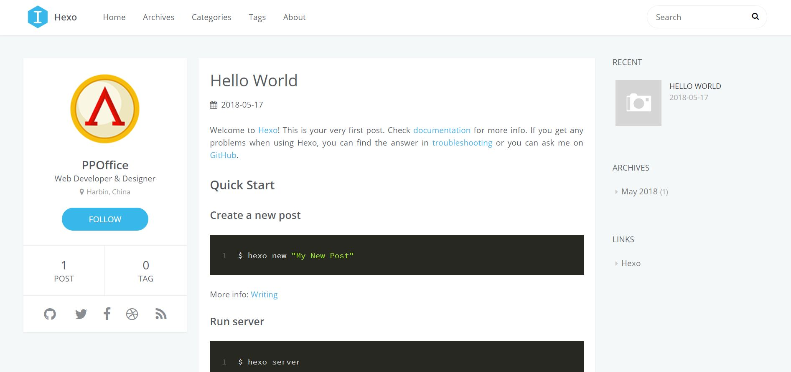

<!DOCTYPE html>
<html>
<head>
    <!-- hexo-inject:begin --><!-- hexo-inject:end --><meta charset="utf-8">
    
    <title>2.New features | HtPsi&#39;s Wiki</title>
    
    
        <meta name="keywords" content="Hexo,排序,bootstrap,LaTex,Valine,评论,comment">
    
    <meta name="viewport" content="width=device-width, initial-scale=1, maximum-scale=1">
    <meta name="description" content="New feature使用icarus主题The blog theme you may fall in love with, coming to Hexo. 仓库地址Firsit,Go to your blog’s root folder and clone Icarus into themes/icarus:1$ git clone https://github.com/ppoffice/hex">
<meta name="keywords" content="Hexo,排序,bootstrap,LaTex,Valine,评论,comment">
<meta property="og:type" content="article">
<meta property="og:title" content="2.New features">
<meta property="og:url" content="https://wiki.htpsi.me/wiki/new-feature/index.html">
<meta property="og:site_name" content="HtPsi&#39;s Wiki">
<meta property="og:description" content="New feature使用icarus主题The blog theme you may fall in love with, coming to Hexo. 仓库地址Firsit,Go to your blog’s root folder and clone Icarus into themes/icarus:1$ git clone https://github.com/ppoffice/hex">
<meta property="og:image" content="https://wiki.htpsi.me/wiki/new-feature/icarus1.JPG">
<meta property="og:updated_time" content="2018-05-19T18:06:38.741Z">
<meta name="twitter:card" content="summary">
<meta name="twitter:title" content="2.New features">
<meta name="twitter:description" content="New feature使用icarus主题The blog theme you may fall in love with, coming to Hexo. 仓库地址Firsit,Go to your blog’s root folder and clone Icarus into themes/icarus:1$ git clone https://github.com/ppoffice/hex">
<meta name="twitter:image" content="https://wiki.htpsi.me/wiki/new-feature/icarus1.JPG">
    

    
        <link rel="alternate" href="/atom.xml" title="HtPsi&#39;s Wiki" type="application/atom+xml">
    

    
        <link rel="icon" href="/images/wiki.png">
    

    <link rel="stylesheet" href="/libs/font-awesome/css/font-awesome.min.css">
    <link rel="stylesheet" href="/libs/open-sans/styles.css">
    <link rel="stylesheet" href="/libs/source-code-pro/styles.css">

    <link rel="stylesheet" href="/css/style.css">
    <script src="/libs/jquery/2.1.3/jquery.min.js"></script>
    <script src="/libs/jquery/plugins/cookie/1.4.1/jquery.cookie.js"></script>
    
    
        <link rel="stylesheet" href="/libs/lightgallery/css/lightgallery.min.css">
    
    
        <link rel="stylesheet" href="/libs/justified-gallery/justifiedGallery.min.css"><!-- hexo-inject:begin --><!-- hexo-inject:end -->
    
    
    
    


</head>
</html>
<body>
    <!-- hexo-inject:begin --><!-- hexo-inject:end --><div id="container">
        <header id="header">
    <div id="header-main" class="header-inner">
        <div class="outer">
            <a href="/" id="logo">
                <i class="logo"></i>
                <span class="site-title">HtPsi&#39;s Wiki</span>
            </a>
            <nav id="main-nav">
                
                    <a class="main-nav-link" href="/">首页</a>
                
                    <a class="main-nav-link" href="/archives">归档</a>
                
                    <a class="main-nav-link" href="/categories">分类</a>
                
                    <a class="main-nav-link" href="/tags">标签</a>
                
                    <a class="main-nav-link" href="/about">关于</a>
                
                    <a class="main-nav-link" href="https://www.htpsi.me" rel="external nofollow noopener noreferrer" target="_blank">Blog</a>
                
            </nav>
            
            <div id="search-form-wrap">

    <form class="search-form">
        <input type="text" class="ins-search-input search-form-input" placeholder="Rechercher">
        <button type="submit" class="search-form-submit"></button>
    </form>
    <div class="ins-search">
    <div class="ins-search-mask"></div>
    <div class="ins-search-container">
        <div class="ins-input-wrapper">
            <input type="text" class="ins-search-input" placeholder="Type something...">
            <span class="ins-close ins-selectable"><i class="fa fa-times-circle"></i></span>
        </div>
        <div class="ins-section-wrapper">
            <div class="ins-section-container"></div>
        </div>
    </div>
</div>
<script>
(function (window) {
    var INSIGHT_CONFIG = {
        TRANSLATION: {
            POSTS: 'Articles',
            PAGES: 'Pages',
            CATEGORIES: 'Catégories',
            TAGS: 'Tags',
            UNTITLED: '(Untitled)',
        },
        ROOT_URL: '/',
        CONTENT_URL: '/content.json',
    };
    window.INSIGHT_CONFIG = INSIGHT_CONFIG;
})(window);
</script>
<script src="/js/insight.js"></script>

</div>
        </div>
    </div>
    <div id="main-nav-mobile" class="header-sub header-inner">
        <table class="menu outer">
            <tr>
                
                    <td><a class="main-nav-link" href="/">首页</a></td>
                
                    <td><a class="main-nav-link" href="/archives">归档</a></td>
                
                    <td><a class="main-nav-link" href="/categories">分类</a></td>
                
                    <td><a class="main-nav-link" href="/tags">标签</a></td>
                
                    <td><a class="main-nav-link" href="/about">关于</a></td>
                
                    <td><a class="main-nav-link" href="https://www.htpsi.me" rel="external nofollow noopener noreferrer" target="_blank">Blog</a></td>
                
                <td>
                    
    <div class="search-form">
        <input type="text" class="ins-search-input search-form-input" placeholder="Rechercher">
    </div>

                </td>
            </tr>
        </table>
    </div>
</header>

        <div class="outer">
            
            
                <aside id="sidebar">
   
        
    <div class="widget-wrap" id="categories">
        <h3 class="widget-title">
            <span>Catégories</span>
            &nbsp;
            <a id="allExpand" href="#">
                <i class="fa fa-angle-double-down fa-2x"></i>
            </a>
        </h3>
        
        
        
         <ul class="unstyled" id="tree"> 
                    <li class="directory">
                        <a href="#" data-role="directory">
                            <i class="fa fa-folder"></i>
                            &nbsp;
                            Diary
                        </a>
                         <ul class="unstyled" id="tree">  <li class="file"><a href="/wiki/hello-world/">Hello World</a></li>  </ul> 
                    </li> 
                    
                    <li class="directory open">
                        <a href="#" data-role="directory">
                            <i class="fa fa-folder-open"></i>
                            &nbsp;
                            Hexo
                        </a>
                         <ul class="unstyled" id="tree">  <li class="file"><a href="/wiki/hexo/">1.那些搭建hexo博客碰到的坑</a></li>  <li class="file active"><a href="/wiki/new-feature/">2.New features</a></li>  </ul> 
                    </li> 
                    
                    <li class="directory">
                        <a href="#" data-role="directory">
                            <i class="fa fa-folder"></i>
                            &nbsp;
                            Literature materials
                        </a>
                         <ul class="unstyled" id="tree"> 
                    <li class="directory">
                        <a href="#" data-role="directory">
                            <i class="fa fa-folder"></i>
                            &nbsp;
                            Words and Sentences
                        </a>
                         <ul class="unstyled" id="tree">  <li class="file"><a href="/wiki/quote0/">Some Quotes</a></li>  </ul> 
                    </li> 
                     <li class="file"><a href="/wiki/quote/">Some quotes</a></li>  </ul> 
                    </li> 
                    
                    <li class="directory">
                        <a href="#" data-role="directory">
                            <i class="fa fa-folder"></i>
                            &nbsp;
                            Markdown
                        </a>
                         <ul class="unstyled" id="tree">  <li class="file"><a href="/wiki/Advanced-Markdown-Syntax/">2.Advanced Markdown Syntax</a></li>  <li class="file"><a href="/wiki/color-and-character/">3.Color and Characters</a></li>  <li class="file"><a href="/wiki/markdown-preview/">1.Markdown Preview</a></li>  </ul> 
                    </li> 
                     <li class="file"><a href="/wiki/index/">Welcome to HtPsi's Wiki</a></li>  </ul> 
    </div>
    <script>
        $(document).ready(function() {
            var iconFolderOpenClass  = 'fa-folder-open';
            var iconFolderCloseClass = 'fa-folder';
            var iconAllExpandClass = 'fa-angle-double-down';
            var iconAllPackClass = 'fa-angle-double-up';
            // Handle directory-tree expansion:
            // 左键单独展开目录
            $(document).on('click', '#categories a[data-role="directory"]', function (event) {
                event.preventDefault();

                var icon = $(this).children('.fa');
                var expanded = icon.hasClass(iconFolderOpenClass);
                var subtree = $(this).siblings('ul');
                icon.removeClass(iconFolderOpenClass).removeClass(iconFolderCloseClass);
                if (expanded) {
                    if (typeof subtree != 'undefined') {
                        subtree.slideUp({ duration: 100 });
                    }
                    icon.addClass(iconFolderCloseClass);
                } else {
                    if (typeof subtree != 'undefined') {
                        subtree.slideDown({ duration: 100 });
                    }
                    icon.addClass(iconFolderOpenClass);
                }
            });
            // 右键展开下属所有目录
            $('#categories a[data-role="directory"]').bind("contextmenu", function(event){
                event.preventDefault();
                
                var icon = $(this).children('.fa');
                var expanded = icon.hasClass(iconFolderOpenClass);
                var listNode = $(this).siblings('ul');
                var subtrees = $.merge(listNode.find('li ul'), listNode);
                var icons = $.merge(listNode.find('.fa'), icon);
                icons.removeClass(iconFolderOpenClass).removeClass(iconFolderCloseClass);
                if(expanded) {
                    subtrees.slideUp({ duration: 100 });
                    icons.addClass(iconFolderCloseClass);
                } else {
                    subtrees.slideDown({ duration: 100 });
                    icons.addClass(iconFolderOpenClass);
                }
            })
            // 展开关闭所有目录按钮
            $(document).on('click', '#allExpand', function (event) {
                event.preventDefault();
                
                var icon = $(this).children('.fa');
                var expanded = icon.hasClass(iconAllExpandClass);
                icon.removeClass(iconAllExpandClass).removeClass(iconAllPackClass);
                if(expanded) {
                    $('#sidebar .fa.fa-folder').removeClass('fa-folder').addClass('fa-folder-open')
                    $('#categories li ul').slideDown({ duration: 100 });
                    icon.addClass(iconAllPackClass);
                } else {
                    $('#sidebar .fa.fa-folder-open').removeClass('fa-folder-open').addClass('fa-folder')
                    $('#categories li ul').slideUp({ duration: 100 });
                    icon.addClass(iconAllExpandClass);
                }
            });  
        });
    </script>

    
        
    <div class="widget-wrap widget-list">
        <h3 class="widget-title"><span>Liens</span></h3>
        <div class="widget">
            <ul>
                
                    <li>
                        <a href="http://acfun.cn" rel="external nofollow noopener noreferrer" target="_blank">Acfun</a>
                    </li>
                
                    <li>
                        <a href="http://bilibili.com" rel="external nofollow noopener noreferrer" target="_blank">Bilibili</a>
                    </li>
                
                    <li>
                        <a href="https://www.venganza.org/" rel="external nofollow noopener noreferrer" target="_blank">Church of the FSM</a>
                    </li>
                
                    <li>
                        <a href="http://www.scp-wiki.net/" rel="external nofollow noopener noreferrer" target="_blank">SCP-Foundation</a>
                    </li>
                
                    <li>
                        <a href="https://www.pixiv.net/" rel="external nofollow noopener noreferrer" target="_blank">Pixiv</a>
                    </li>
                
                    <li>
                        <a href="https://en.wikiquote.org/" rel="external nofollow noopener noreferrer" target="_blank">Wikiquote</a>
                    </li>
                
            </ul>
        </div>
    </div>


    
    <div id="toTop" class="fa fa-angle-up"></div>
</aside>
            
            <section id="main"><article id="post-new-feature" class="article article-type-post" itemscope="" itemprop="blogPost">
    <div class="article-inner">
        
        
            <header class="article-header">
                
                    <div class="article-meta">
                        
    <div class="article-category">
    	<i class="fa fa-folder"></i>
        <a class="article-category-link" href="/categories/Hexo/">Hexo</a>
    </div>

                        
    <div class="article-tag">
        <i class="fa fa-tag"></i>
        <a class="tag-link" href="/tags/Hexo/">Hexo</a>, <a class="tag-link" href="/tags/LaTex/">LaTex</a>, <a class="tag-link" href="/tags/Valine/">Valine</a>, <a class="tag-link" href="/tags/bootstrap/">bootstrap</a>, <a class="tag-link" href="/tags/comment/">comment</a>, <a class="tag-link" href="/tags/排序/">排序</a>, <a class="tag-link" href="/tags/评论/">评论</a>
    </div>

                        
    <div class="article-date">
        <i class="fa fa-calendar"></i>
        <a href="/wiki/new-feature/">
            <time datetime="2018-05-14T16:05:37.000Z" itemprop="datePublished">2018-05-15</time>
        </a>
    </div>


                        
                    </div>
                
                
    
        <h1 class="article-title" itemprop="name">
            2.New features
        </h1>
    

            </header>
        
        
        <div class="article-entry" itemprop="articleBody">
        
        
            
                <div id="toc" class="toc-article">
                <strong class="toc-title">Catalogue</strong>
                    <ol class="toc"><li class="toc-item toc-level-2"><a class="toc-link" href="#New-feature"><span class="toc-number">1.</span> <span class="toc-text">New feature</span></a><ol class="toc-child"><li class="toc-item toc-level-3"><a class="toc-link" href="#使用icarus主题"><span class="toc-number">1.1.</span> <span class="toc-text">使用icarus主题</span></a></li><li class="toc-item toc-level-3"><a class="toc-link" href="#实现排序功能（文章置顶）"><span class="toc-number">1.2.</span> <span class="toc-text">实现排序功能（文章置顶）</span></a><ol class="toc-child"><li class="toc-item toc-level-4"><a class="toc-link" href="#icarus主题相关问题"><span class="toc-number">1.2.1.</span> <span class="toc-text">icarus主题相关问题</span></a></li></ol></li><li class="toc-item toc-level-3"><a class="toc-link" href="#Valine评论支持（待实现）"><span class="toc-number">1.3.</span> <span class="toc-text">Valine评论支持（待实现）</span></a></li><li class="toc-item toc-level-3"><a class="toc-link" href="#bootstrap支持（待实现）"><span class="toc-number">1.4.</span> <span class="toc-text">bootstrap支持（待实现）</span></a></li><li class="toc-item toc-level-3"><a class="toc-link" href="#LaTeX-公式"><span class="toc-number">1.5.</span> <span class="toc-text">LaTeX 公式</span></a></li></ol></li><li class="toc-item toc-level-2"><a class="toc-link" href="#参考资料"><span class="toc-number">2.</span> <span class="toc-text">参考资料</span></a></li></ol>
                </div>
            
        
        
            <h2 id="New-feature"><a href="#New-feature" class="headerlink" title="New feature"></a>New feature</h2><h3 id="使用icarus主题"><a href="#使用icarus主题" class="headerlink" title="使用icarus主题"></a>使用icarus主题</h3><p>The blog theme you may fall in love with, coming to Hexo. <a href="https://github.com/ppoffice/hexo-theme-icarus" rel="external nofollow noopener noreferrer" target="_blank">仓库地址</a><br>Firsit,Go to your blog’s root folder and clone Icarus into themes/icarus:<br><figure class="highlight plain"><table><tr><td class="gutter"><pre><div class="line">1</div></pre></td><td class="code"><pre><div class="line">$ git clone https://github.com/ppoffice/hexo-theme-icarus.git themes/icarus</div></pre></td></tr></table></figure></p>
<p>Edit your blog’s <code>_config.yml</code>, change the theme field to <code>icarus</code> to enable this theme:<br><figure class="highlight plain"><table><tr><td class="gutter"><pre><div class="line">1</div></pre></td><td class="code"><pre><div class="line">theme: icarus</div></pre></td></tr></table></figure></p>
<p>Rename <code>_config.yml.example</code> in the theme folder to <code>_config.yml</code>.</p>
<p>To enable <a href="https://github.com/ppoffice/hexo-theme-icarus/wiki/Search#insight-search" rel="external nofollow noopener noreferrer" target="_blank">Insight Search</a> as your default search engine, you should also install hexo-generator-json-content from npm.<br><figure class="highlight plain"><table><tr><td class="gutter"><pre><div class="line">1</div></pre></td><td class="code"><pre><div class="line">$ npm install -S hexo-generator-json-content</div></pre></td></tr></table></figure></p>
<p>而后经过本地测试，主题配置成功：<br></p>
<p>其他功能例如评论等可以参考主题<a href="https://github.com/ppoffice/hexo-theme-icarus/wiki" rel="external nofollow noopener noreferrer" target="_blank">wiki</a>。</p>
<h3 id="实现排序功能（文章置顶）"><a href="#实现排序功能（文章置顶）" class="headerlink" title="实现排序功能（文章置顶）"></a>实现排序功能（文章置顶）</h3><p>功能实现参考了两篇技术博客：<a href="https://sobaigu.com/hexo-post-stick-to-top.html" rel="external nofollow noopener noreferrer" target="_blank">Hexo博客添加文章置顶功能</a>和<a href="http://www.netcan666.com/2015/11/22/%E8%A7%A3%E5%86%B3Hexo%E7%BD%AE%E9%A1%B6%E9%97%AE%E9%A2%98/" rel="external nofollow noopener noreferrer" target="_blank">解决Hexo置顶问题</a>。</p>
<p>在Hexo生成首页HTML时，将top值高的文章排在前面，达到置顶功能。</p>
<p>修改Hexo文件夹下的<code>node_modules/hexo-generator-index/lib/generator.js</code>，在生成文章之前进行文章top值排序。</p>
<p>需添加的代码：</p>
<figure class="highlight plain"><table><tr><td class="gutter"><pre><div class="line">1</div><div class="line">2</div><div class="line">3</div><div class="line">4</div><div class="line">5</div><div class="line">6</div><div class="line">7</div><div class="line">8</div><div class="line">9</div><div class="line">10</div><div class="line">11</div><div class="line">12</div><div class="line">13</div></pre></td><td class="code"><pre><div class="line">posts.data = posts.data.sort(function(a, b) &#123;</div><div class="line">    if(a.top &amp;&amp; b.top) &#123; // 两篇文章top都有定义</div><div class="line">        if(a.top == b.top) return b.date - a.date; // 若top值一样则按照文章日期降序排</div><div class="line">        else return b.top - a.top; // 否则按照top值降序排</div><div class="line">    &#125;</div><div class="line">    else if(a.top &amp;&amp; !b.top) &#123; // 以下是只有一篇文章top有定义，那么将有top的排在前面（这里用异或操作居然不行233）</div><div class="line">        return -1;</div><div class="line">    &#125;</div><div class="line">    else if(!a.top &amp;&amp; b.top) &#123;</div><div class="line">        return 1;</div><div class="line">    &#125;</div><div class="line">    else return b.date - a.date; // 都没定义按照文章日期降序排</div><div class="line">&#125;);</div></pre></td></tr></table></figure>
<p>其中涉及Javascript的比较函数：<br><figure class="highlight plain"><table><tr><td class="gutter"><pre><div class="line">1</div><div class="line">2</div><div class="line">3</div></pre></td><td class="code"><pre><div class="line">cmp(var a, var b) &#123;</div><div class="line">    return  a - b; // 升序，降序的话就 b - a</div><div class="line">&#125;</div></pre></td></tr></table></figure></p>
<p>修改完成后，只需要在<code>front-matter</code>中设置需要置顶文章的<code>top</code>值，将会根据<code>top</code>值大小来选择置顶顺序，<code>top</code>值越大越靠前。需要注意的是，这个文件不是主题的一部分，也不是<code>Git</code>管理的，备份的时候比较容易忽略。</p>
<p>以下是最终的<code>generator.js</code>内容</p>
<figure class="highlight plain"><table><tr><td class="gutter"><pre><div class="line">1</div><div class="line">2</div><div class="line">3</div><div class="line">4</div><div class="line">5</div><div class="line">6</div><div class="line">7</div><div class="line">8</div><div class="line">9</div><div class="line">10</div><div class="line">11</div><div class="line">12</div><div class="line">13</div><div class="line">14</div><div class="line">15</div><div class="line">16</div><div class="line">17</div><div class="line">18</div><div class="line">19</div><div class="line">20</div><div class="line">21</div><div class="line">22</div><div class="line">23</div><div class="line">24</div><div class="line">25</div><div class="line">26</div><div class="line">27</div><div class="line">28</div></pre></td><td class="code"><pre><div class="line">&apos;use strict&apos;;</div><div class="line">var pagination = require(&apos;hexo-pagination&apos;);</div><div class="line">module.exports = function(locals)&#123;</div><div class="line">  var config = this.config;</div><div class="line">  var posts = locals.posts;</div><div class="line">    posts.data = posts.data.sort(function(a, b) &#123;</div><div class="line">        if(a.top &amp;&amp; b.top) &#123;</div><div class="line">            if(a.top == b.top) return b.date - a.date;</div><div class="line">            else return b.top - a.top;</div><div class="line">        &#125;</div><div class="line">        else if(a.top &amp;&amp; !b.top) &#123;</div><div class="line">            return -1;</div><div class="line">        &#125;</div><div class="line">        else if(!a.top &amp;&amp; b.top) &#123;</div><div class="line">            return 1;</div><div class="line">        &#125;</div><div class="line">        else return b.date - a.date;</div><div class="line">    &#125;);</div><div class="line">  var paginationDir = config.pagination_dir || &apos;page&apos;;</div><div class="line">  return pagination(&apos;&apos;, posts, &#123;</div><div class="line">    perPage: config.index_generator.per_page,</div><div class="line">    layout: [&apos;index&apos;, &apos;archive&apos;],</div><div class="line">    format: paginationDir + &apos;/%d/&apos;,</div><div class="line">    data: &#123;</div><div class="line">      __index: true</div><div class="line">    &#125;</div><div class="line">  &#125;);</div><div class="line">&#125;;</div></pre></td></tr></table></figure>
<p>经过测试，文章排序正常。</p>
<h4 id="icarus主题相关问题"><a href="#icarus主题相关问题" class="headerlink" title="icarus主题相关问题"></a>icarus主题相关问题</h4><ul>
<li><p>banner 和 thumnail 引用本地图片首页能显示，但是点进文章内部引用出错</p>
<ul>
<li><p>问题描述：banner引用本地图片 如</p>
<figure class="highlight plain"><table><tr><td class="gutter"><pre><div class="line">1</div><div class="line">2</div></pre></td><td class="code"><pre><div class="line">banner: css/images/salt-lake.jpg</div><div class="line">thumbnail: css/images/salt-lake.jpg</div></pre></td></tr></table></figure>
<p>首页能显示，但是点进文章内部无法显示</p>
</li>
<li>解决办法：务必不要把图片放入红色的主题内部css样式文件夹中，而是把 图片放入<code>source</code>中的<code>images</code>文件夹中，并且使用路径<figure class="highlight plain"><table><tr><td class="gutter"><pre><div class="line">1</div></pre></td><td class="code"><pre><div class="line">/images/xxx.jpg</div></pre></td></tr></table></figure>
</li>
</ul>
</li>
</ul>
<h3 id="Valine评论支持（待实现）"><a href="#Valine评论支持（待实现）" class="headerlink" title="Valine评论支持（待实现）"></a>Valine评论支持（待实现）</h3><p>icarus主题已经支持<a href="https://valine.js.org/" rel="external nofollow noopener noreferrer" target="_blank">Valine</a>评论系统，但是主题配置的评论模块实在是不够美观，而且也不支持latex。因此我决定自己修改主题文件来自定义评论模块样式。</p>
<p>主要参考了官方技术文档和三篇技术博客<a href="https://www.xxwhite.com/2017/Valine.html" rel="external nofollow noopener noreferrer" target="_blank">MonoLogueChi</a>、<a href="https://panjunwen.com/diy-a-comment-system/" rel="external nofollow noopener noreferrer" target="_blank">Deserts</a>和<a href="https://ioliu.cn/2017/add-valine-comments-to-your-blog/" rel="external nofollow noopener noreferrer" target="_blank">云淡风轻</a>。另外可以参考<a href="https://github.com/litten/hexo-theme-yilia/pull/646" rel="external nofollow noopener noreferrer" target="_blank">yilia主题</a>。</p>
<h3 id="bootstrap支持（待实现）"><a href="#bootstrap支持（待实现）" class="headerlink" title="bootstrap支持（待实现）"></a>bootstrap支持（待实现）</h3><p>此处挖坑：</p>
<ul>
<li>可以参考hexo上不同theme中支持bootstrap技术的博客代码。</li>
<li>参考博客<a href="http://blog.cofess.com/books/" rel="external nofollow noopener noreferrer" target="_blank">cofess</a>，实现bootstrap最简单的分栏功能。</li>
<li><a href="http://www.bootcss.com/" rel="external nofollow noopener noreferrer" target="_blank">Bootstrap中文官网</a></li>
</ul>
<h3 id="LaTeX-公式"><a href="#LaTeX-公式" class="headerlink" title="LaTeX 公式"></a>LaTeX 公式</h3><p>Markdown不天然支持Latex，一般通过mathjax插件来实现latex编译功能。</p>
<p>$ 表示行内公式：</p>
<p>质能守恒方程可以用一个很简洁的方程式 $E=mc^2$ 来表达。</p>
<p>$$ 表示整行公式：</p>
<p>$$\sum_{i=1}^n a_i=0$$</p>
<p>$$f(x_1,x_x,\ldots,x_n) = x_1^2 + x_2^2 + \cdots + x_n^2 $$</p>
<p>$$\sum^{j-1}<em>{k=0}{\widehat{\gamma}</em>{kj} z_k}$$</p>
<p>访问 <a href="http://meta.math.stackexchange.com/questions/5020/mathjax-basic-tutorial-and-quick-reference" rel="external nofollow noopener noreferrer" target="_blank">MathJax</a> 参考更多使用方法。</p>
<h2 id="参考资料"><a href="#参考资料" class="headerlink" title="参考资料"></a>参考资料</h2><blockquote>
<ul>
<li><a href=""></a></li>
<li><a href=""></a></li>
</ul>
</blockquote>

            </div>
        
        <footer class="article-footer">
        </footer>
    </div>
</article>


    
<nav id="article-nav">
    
        <a href="/wiki/quote0/" id="article-nav-newer" class="article-nav-link-wrap">
            <strong class="article-nav-caption">Plus récent</strong>
            <div class="article-nav-title">
                
                    Some Quotes
                
            </div>
        </a>
    
    
        <a href="/wiki/color-and-character/" id="article-nav-older" class="article-nav-link-wrap">
            <strong class="article-nav-caption">Plus ancien</strong>
            <div class="article-nav-title">3.Color and Characters</div>
        </a>
    
</nav>


    
    


<!-- baidu url auto push script -->
<script type="text/javascript">
    !function(){var e=/([http|https]:\/\/[a-zA-Z0-9\_\.]+\.baidu\.com)/gi,r=window.location.href,o=document.referrer;if(!e.test(r)){var n="//api.share.baidu.com/s.gif";o?(n+="?r="+encodeURIComponent(document.referrer),r&&(n+="&l="+r)):r&&(n+="?l="+r);var t=new Image;t.src=n}}(window);
</script>     
</section>
        </div>
        <footer id="footer">
    <div class="outer">
        <div id="footer-info" class="inner">
            HtPsi &copy; 2019
            <a rel="external nofollow noopener noreferrer" href="http://creativecommons.org/licenses/by-nc-nd/4.0/" target="_blank"></a>
            <br> Powered by <a href="http://hexo.io/" target="_blank" rel="external nofollow noopener noreferrer">Hexo</a>. Theme - <a href="https://github.com/HtPsi/hexo-theme-Wikitten" rel="external nofollow noopener noreferrer" target="_blank">Wikitten</a>
        </div>
    </div>
</footer>

        

    
        <script src="/libs/lightgallery/js/lightgallery.min.js"></script>
        <script src="/libs/lightgallery/js/lg-thumbnail.min.js"></script>
        <script src="/libs/lightgallery/js/lg-pager.min.js"></script>
        <script src="/libs/lightgallery/js/lg-autoplay.min.js"></script>
        <script src="/libs/lightgallery/js/lg-fullscreen.min.js"></script>
        <script src="/libs/lightgallery/js/lg-zoom.min.js"></script>
        <script src="/libs/lightgallery/js/lg-hash.min.js"></script>
        <script src="/libs/lightgallery/js/lg-share.min.js"></script>
        <script src="/libs/lightgallery/js/lg-video.min.js"></script>
    
    
        <script src="/libs/justified-gallery/jquery.justifiedGallery.min.js"></script>
    


<!-- Custom Scripts -->
<script src="/js/main.js"></script>

    </div><!-- hexo-inject:begin --><!-- Begin: Injected MathJax -->
<script type="text/x-mathjax-config">
  MathJax.Hub.Config({"tex2jax":{"inlineMath":[["$","$"],["\\(","\\)"]],"skipTags":["script","noscript","style","textarea","pre","code"],"processEscapes":true},"TeX":{"equationNumbers":{"autoNumber":"AMS"}}});
</script>

<script type="text/x-mathjax-config">
  MathJax.Hub.Queue(function() {
    var all = MathJax.Hub.getAllJax(), i;
    for(i=0; i < all.length; i += 1) {
      all[i].SourceElement().parentNode.className += ' has-jax';
    }
  });
</script>

<script type="text/javascript" src="//cdn.mathjax.org/mathjax/latest/MathJax.js?config=TeX-AMS-MML_HTMLorMML">
</script>
<!-- End: Injected MathJax -->
<!-- hexo-inject:end -->
</body>
